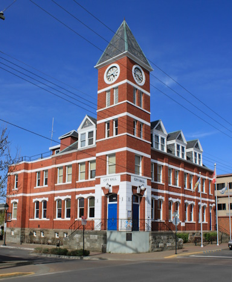
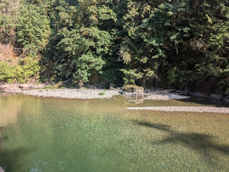
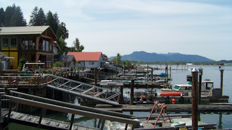
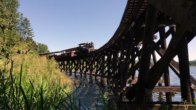
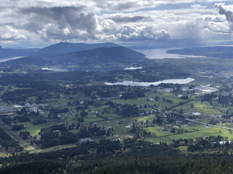
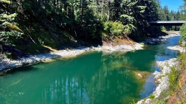

Details
Downtown Duncan
The downtown core of Duncan is one of my favourite places on The Island.
I've lived in Duncan for most of my life, and it's always been a place to go socialize, attend community events, or even just walk around if you're bored.
Some highlights include:
- The Clock Tower
- The Farmers Market
- The Community Stage
- The Red Balloon Toyshop
- The Arbutus Cafe
- ...and many more!

Paradise
Paradise has been a very popular swimming location on the Cowichan River for 40+ years.
It features large cliffs to jump from, and has both shallow and deep areas so it is perfect for people of all skill levels of swimming.
In the past few years, someone bought the property the trails are on, cutting off access to the location; However, it did not take long for people to find a way through to the river.

Cowichan Bay
Cowichan Bay, commonly known as simply "Cow Bay" by the locals, is a small community on the coast of The Island near Duncan.
It is filled with small shops, resturaunts, resorts, and a maritime museum.
Cow Bay features a large marina where people store their boats. You will also occasionally see large ships parked out in the bay.

BC Forest Discovery Centre
The Forest Discovery Centre, also known as "The Train Museum", is a core of the community in the Cowichan Valley.
Every year they host events for the community such as the Halloween Train, Christmas Train, Maple Syrup Festival, and many many more.
Some features include:
- A museum on logging on Vancouver Island
- Multiple full size steam trains
- Many old logging vehicles
- A narrow gauge train to ride around the property, both a steam and a diesel
- Buildings preserved from the old communities in the Cowichan Valley, including the original Somenos School.

Mountain Prevost
Prevost is one of the mountains that towers over Duncan. It's a large mountain that is used for hiking, mountain biking, quadding, and logging.
The top of the mountain features two peaks. The first is accessible by car and is a popular location for paragliders and star gazers. The second is a semi-difficult hike that leads to a war memorial and an amazing view of the Cowichan Valley.

Skutz Falls
Skutz Falls in another very popular swimming location on the Cowichan River. It features small pools that are great for relaxing, and a faster and deeper area that is perfect for stronger swimmers. If you head down the river, you'll eventually reach the falls. They are quite dangerous as the river is very fast and it is not recommended to swim there.
